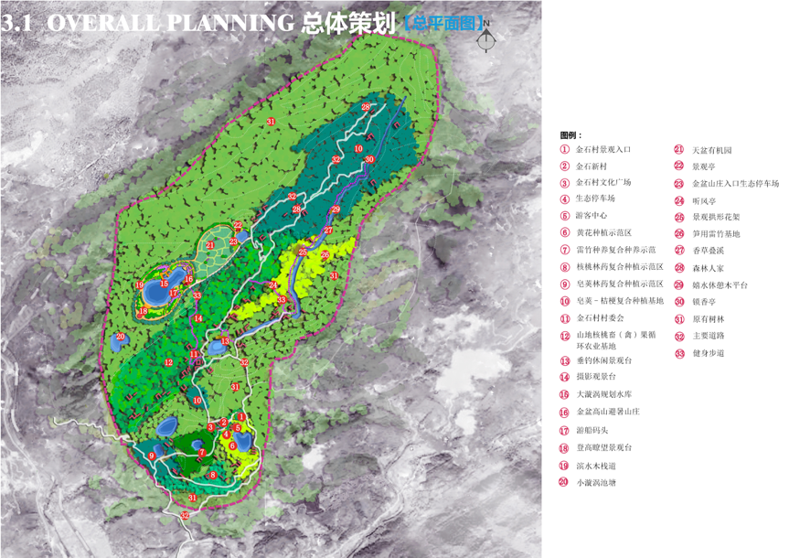
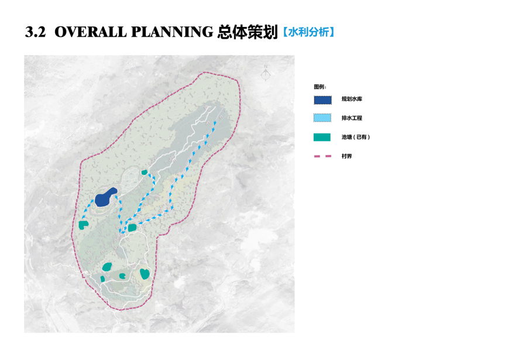
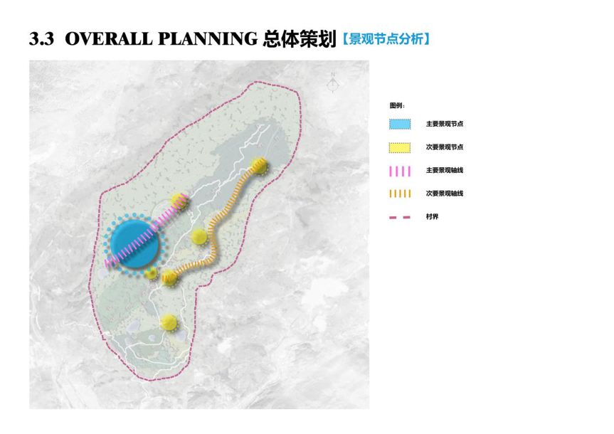
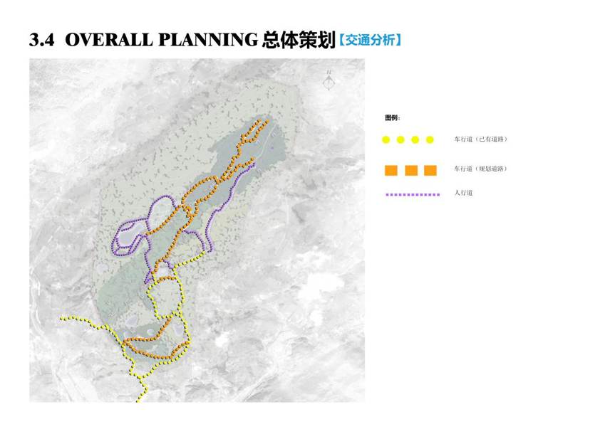
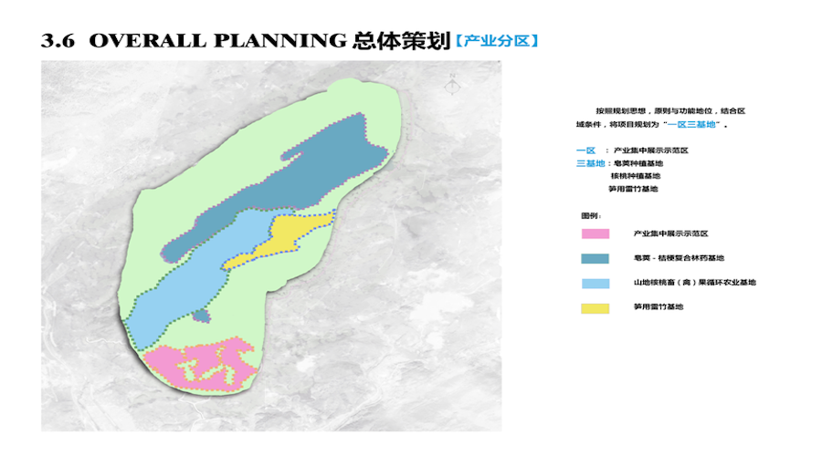

金石村位于二郎庙西北，距二郎庙政府5公里，距县城29公里，全村土地面积5.8平方公里，其中耕地面积1087亩，林地面积8700亩，其他农业用地120亩，属干旱贫瘠区域。土壤多为中性偏碱。
该项目认真贯彻新时期扶贫开发工作的总体要求，坚持精准识别、精准管理、精准帮扶、精准脱贫，以系统规划为引领，产业扶贫为重点，增强内生动力为关键，不断提升扶贫绩效。按照规划思想，原则与功能定位，结合区域条件，将项目规划为“一区三基地”。“一区”：产业集中展示示范区；“三基地”：皂荚-桔梗复合林药基地；山地核桃畜（禽）果循环农业基地；笋用雷竹基地。该项目采用规模化生产，大力推行复合农业经营模式，提高了综合出产效益，使经济效益能够长短结合。
    